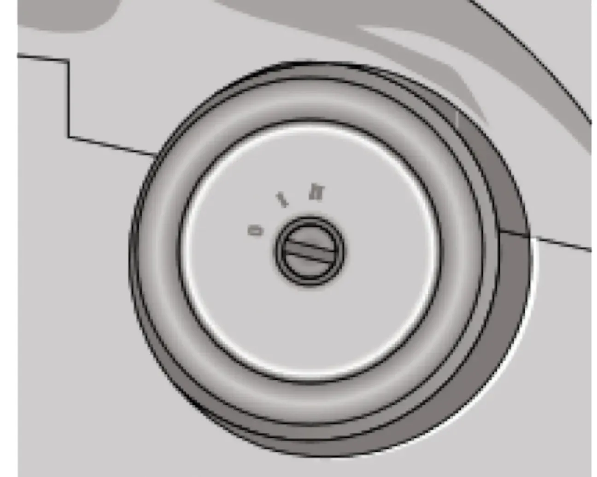

ОПИСАНИЕ АВТОМОБИЛЯ — II. Органы управления и приборы
Выключатель зажигания
зажиганиестартерположение ключапротивоугонное устройствозуммер
Положения ключа в выключателе зажигания показаны на рисунке 22.

| Положение ключа | Назначение |
|---|---|
| 0 — «выключено» | Всё выключено, ключ вынимается. При вынутом ключе срабатывает механизм запирающего механического противоугонного устройства. Для полного блокирования вала рулевого управления поверните рулевое колесо вправо или влево до щелчка. |
| I — «зажигание» | Включено зажигание, ключ не вынимается. Для выключения противоугонного устройства вставьте ключ в выключатель зажигания и, слегка поворачивая рулевое колесо вправо-влево, переведите ключ в положение I. |
| II — «стартер» | Включён стартер, ключ не вынимается. Положение ключа нефиксированное: при снятии нагрузки ключ возвращается в положение I. |
Примечание:
Выключатель зажигания имеет блокировку, препятствующую включению стартера при работающем двигателе. Для повторного пуска двигателя после неудачной попытки переведите ключ из положения I в положение 0 и затем снова включите стартер.
Выключатель зажигания имеет блокировку, препятствующую включению стартера при работающем двигателе. Для повторного пуска двигателя после неудачной попытки переведите ключ из положения I в положение 0 и затем снова включите стартер.
Выдача предупреждения об оставленном ключе в замке зажигания: если зажигание выключено, то при открывании двери водителя зуммер издаёт прерывистый звуковой сигнал (трель), если в замке зажигания оставлен ключ.
Выдача предупреждения об оставленных включенными габаритных огнях: если зажигание выключено и ключ вынут из замка зажигания, то при открывании двери водителя зуммер издаёт два звуковых сигнала, если остались включенными лампы габаритных огней.
Предупреждение / внимание:
Категорически запрещается выключать зажигание и вынимать ключ из замка зажигания во время движения — это приводит к резкому увеличению нагрузки на педаль тормоза и блокированию рулевого управления.
Категорически запрещается выключать зажигание и вынимать ключ из замка зажигания во время движения — это приводит к резкому увеличению нагрузки на педаль тормоза и блокированию рулевого управления.